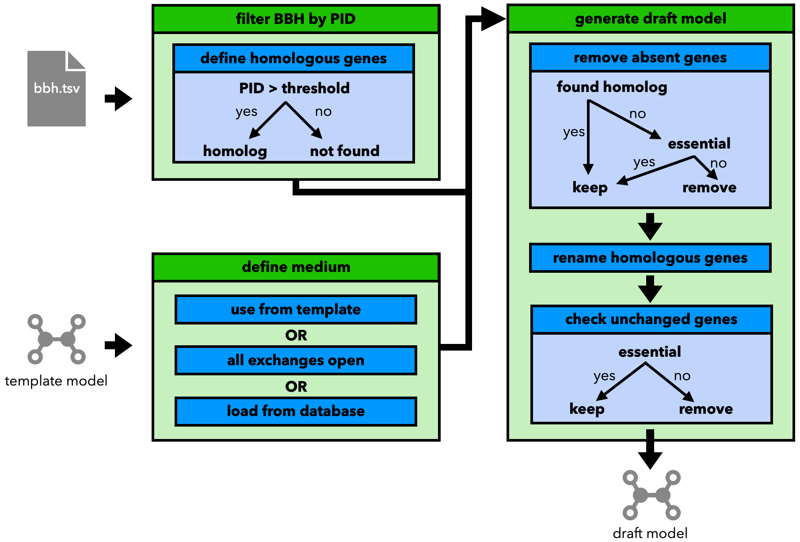

2. Step 2: Generate a Draft Model
Based on the results of step 1, step 2 of the pipelines generates a draft model based on the template model.
Note
For the pipeline to work, the template model needs to be constructed from the genome that was blasted against in step 1.
A graphical representation of the steps can be found below:
The draft model is constructed based on the idea of Norsigian et al.[1] by:
filtering the BLAST best directional hits by their percentage identity value (PID > threshold = homolog)
choosing a medium for the new model
use the one from the template
set all exchanges to open (not advised)
load one from the
refineGEMSdatabase
removing genes from the template that have no (found) homolog in the template genome.
under the condition that the removed genes is not neccessary for the growth of the model
renaming the homologous genes to fit the names from the new genome
checking unchanged genes
remove if not essential